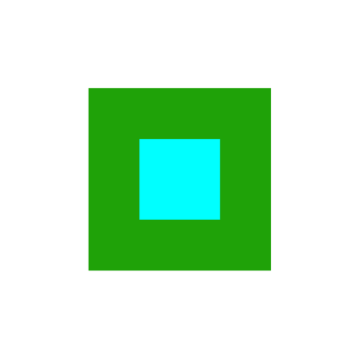

                            <h4>PoL</h4>
                            <ul>
                                <li>identify-column (PK, usually auto-incremented integer)</li>
                                <li>join-column to reference-layer (matching type)</li>
                                <li>measure-column (numeric type)</li>
                            </ul>
                            <h4>LoL</h4>
                            <ul>
                                <li>identify-column (PK, usually auto-incremented integer)</li>
                                <li>join-column to reference-layer (matching type)</li>
                                <li>from-measure-column (numeric type)</li>
                                <li>to-measure-column (numeric type)</li>
                                <li>offset-column (numeric type)</li>
                            </ul>

                    <li>:
                        <ol>
                            <li>
                                
                                PoL-Dialog
                            </li>
                            <li>
                                
                                LoL-Dialog
                            </li>
                            <li>
                                
                                show help
                            </li>
                        </ol>
                    </li>
